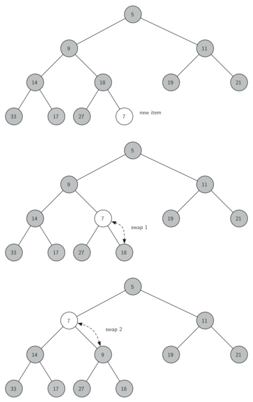

Topic: Heap¶
Introduction and Implementation¶
A heap (堆)is a specialized tree-based data structure。 A heap can be classified as either a max heap or a min heap.
- In a max heap(最大堆), the keys of parent nodes are always greater than or equal to those of the children and the highest key is in the root node.
- In a min heap(最小堆), the keys of parent nodes are less than or equal to those of the children and the lowest key is in the root node.
Heap is one maximally efficient implementation of an abstract data type called a priority queue (see here), and in fact priority queues are often referred to as heaps, regardless of how they may be implemented.
Implementation¶
Priority queues typically use a heap as backbone, giving O(\log n) performance for pushs and pops, and O(n) to build initially.
Binary Heap¶
A common implementation of a heap is the binary heap(二叉堆), in which the tree is a complete binary tree(完全二叉树).
二叉堆的操作与实现
BinaryHeap()：创建一个新的、空的二叉堆对象push(k)：把新元素加入到堆中findMin()：返回堆中的最小项，最小项仍保留在堆中pop()：返回堆中的最小项，同时从堆中删除isEmpty()：返回堆是否为空size()：返回堆中元素的个数heapify(list)：从一个包含元素的列表创建新堆
有两个关键的操作：
1. insert方法。首先，为了满足“完全二叉树”的性质，新键值应该添加到列表的末尾。然而新键值简单地添加在列表末尾，显然无法满足堆次序。所以要通过比较父节点和新加入的元素的方法来重新满足堆次序。如果新加入的元素比父节点要小，可以与父节点互换位置；不断交换，直到到达树的顶端。下图所示一系列交换操作来使新加入元素“上浮”到正确的位置。

2.pop方法 移走根节点的元素后如何保持堆结构和堆次序: 首先，用最后一个节点来代替根节点, 移走最后一个节点保持了堆结构的性质。这么简单的替换，还是会破坏堆次序。第二步，将新节点“下沉”来恢复堆次序。下图所示的是一系列交换操作来使新节点“下沉”到正确的位置。
为了保持堆次序，我们需将新的根节点沿着一条路径“下沉”，直到比两个子节点都小。在选择下沉路径时，如果新根节点比子节点大，那么选择较小的子节点与之交换。

class BinHeap(object): """ 创建一个新的、空的二叉堆对象 """ def __init__(self): self.list = [0] self.size = 0 def perc_up(self,i): """ Percolate the new node into proper position """ while i: if self.list[i] < self.list[i//2]: self.list[i], self.list[i//2] = self.list[i//2], self.list[i] i = i//2 def push(self, item): """把新元素加入到堆中""" self.list.append(item) self.size += 1 self.perc_up(self.size) def findMin(self): """返回堆中的最小项，最小项仍保留在堆中""" return self.list[1] def pop(self): """返回堆中的最小项，同时从堆中删除""" retval = self.list[1] self.list[1] = self.list[-1] self.size -=1 self.list.pop() self.perc_down(1) return retval def percDown(self,i): """ 将新节点“下沉”来恢复堆次序 """ while (i * 2) <= self.size: mc = self.minChild(i) if self.list[i] > self.list[mc]: tmp = self.list[i] self.list[i] = self.list[mc] self.list[mc] = tmp i = mc def minChild(self,i): """ 返回较小的子节点 """ if i * 2 + 1 > size: return i * 2 else: if self.list[i*2] < self.list[i*2+1]: return i * 2 else: return i * 2 + 1 def isEmpty(self): """返回堆是否为空""" return self.size == 0 def __len__(self): """返回堆中元素的个数""" return self.size def heapify(self,alist): """从一个包含元素的列表创建新堆""" self.size = len(alist) self.list.extend(alist) i = self.size //2 while i > 0: self.perc_down(i) i -= 1
建堆的复杂度¶
建堆过程的时间复杂度是堆的一个难点。一般会误认为建堆的时间复杂度是O(nlog n)，因为每一次堆调整的时间复杂度为O(log n)，那么n个节点的时间复杂度为O(nlog n)，这其实是错的。
首先对于二叉树，它必须保证每一层填满之后才能去填充下一层。而且，如果从根结点开始计数(根结点为第0层)，往下第i层的元素如果不是最后一层的话，这一层的元素数量为2^i。这样，对于一棵高为h的完全二叉树，它的元素个数为n=1+2+4+...+2^i, i\in(0,h).
然后理解函数heapify中的循环范围是i=\text{size}//2\sim 0，也就是说这是一个从下往上的建堆。对于第h-1层的每个节点来说，它需要和它的2个子节点比较一次，共计2^{(h-1)}\times 2。对于第h-2层的每个节点来说，最坏情况下，它需要和它的2个子节点比较一次，然后和子节点交换，子节点再和该子节点的子节点比较，所以共计2^{(h-2)}\times 4。以此类推，对于第i层的每个节点来说，最坏情况下，共需比较2^i\times 2(h-i)。
总共需要比较: $$ S= \sum\limits^{i=0}_{i=h-1} 2^{i+1}(h-i) =2^h+2^{h-1}\times 2 + 2^{h-2}\times 3+... \quad .......(a)$$
Application: Median Maintenance¶
Problem Statement: The goal of the problem is to implement the Median Maintenance algorithm. The text file contains a list of the integers; you should treat this as a stream of numbers, arriving one by one. Letting x_i denote the ith number of the file, the kth median m_k is defined as the median of the numbers x_1,…,x_k. (So, if k is odd, then m_k is ((k+1)/2)th smallest number among x_1,…,x_k; if k is even, then m_k is the (k/2)th smallest number among x_1,…,x_k.)
Solution¶
We might use a max heap to represent elements that are less than the median, and a min heap to represent elements that are greater than the median.
........maxHeap....max of maxHeap....min of minHeap ......minHeap.....
After balancing the heaps, the number of elements in two heaps differs at most by 1.
Step 1: Add next item to one of the heaps if next item < maxHeap root: add it to maxHeap else: add it to minHeap Step 2: Balance the heaps (after this step heaps will be either balanced or one of them will contain 1 more item) if number of elements in one of the heaps > the other by more than 1: remove the root element from the one containing more elements and add to the other one Step 3: Calculate the median: if the heaps contain equal amount of elements: median = root of maxHeap else: median = root of the heap with more elements
Implementation¶
Click here to View
import doctest import sys class MinHeap(object): """ Min Heap >>> bh = MinHeap() >>> bh.buildHeap([9,5,14,18,-17,27,33,19,11,21]) >>> bh.findMin() -17 >>> bh.delMin() -17 >>> bh.list[1:] [5, 9, 14, 11, 21, 27, 33, 19, 18] >>> bh.insert(-100) >>> bh.delMin() -100 """ def __init__(self): """ add self.list 0 with initialization in order to divide """ self.list = [-sys.maxsize] self.size = 0 def insert(self, k): """ Insert element to the MinBinaryHeap """ self.list.append(k) self.size += 1 self.perc_up(self.size) def findMin(self): """ Find the min element and return it """ return self.list[1] def delMin(self): """ Delete the min element and return it """ retrival = self.list[1] self.size -= 1 self.list[1] = self.list[-1] self.list.pop() self.perc_down(1) return retrival def isEmpty(self): """ Return if the MinBinaryHeap is empty """ return self.size == 0 def __len__(self): """ Magic Method: return the length of MinBinaryHeap """ return self.size def buildHeap(self, alist): """ Build a MinBinaryHeap from alist which is a collection of data """ self.list.extend(alist) self.size = len(alist) i = self.size//2 while i > 0: self.perc_down(i) i -= 1 def perc_up(self, i): """" perc_up i """ while i//2>0: if self.list[i] < self.list[i // 2]: self.list[i], self.list[i // 2] = self.list[i // 2], self.list[i] i = i // 2 def perc_down(self, i): """ perc down i """ while (i * 2) <= self.size: mc = self.minChild(i) if self.list[i] > self.list[mc]: self.list[i], self.list[mc] = self.list[mc], self.list[i] i = mc def minChild(self, i): """ find the min child """ if i * 2 + 1 > self.size: return i * 2 else: if self.list[i * 2] < self.list[i * 2 + 1]: return i * 2 else: return i * 2 + 1 def __iter__(self): return iter(self.list[1:]) class MaxHeap(object): """ Max Heap >>> bh = MaxHeap() >>> bh.buildHeap([9,5,14,18,-17,27,33,19,11,21]) >>> bh.delMax() 33 >>> bh.insert(100) >>> bh.delMax() 100 >>> len(bh) 9 """ def __init__(self): self.heap = MinHeap() def insert(self, k): self.heap.insert(-k) def delMax(self): return -self.heap.delMin() def buildHeap(self, alist): for i in range(len(alist)): alist[i] = -alist[i] self.heap.buildHeap(alist) def findMax(self): return -self.heap.findMin() def __len__(self): return self.heap.size def __iter__(self): for i in range(1, self.heap.size+1): yield -self.heap.list[i]
def median_maintenance(textfile): min_heap = MinHeap() # > medium max_heap = MaxHeap() # < medium medians = [] count = 0 with open(textfile) as infile: for line in infile: item = int(line) count += 1 # Step 1: Add next item to one of the hepas # special case: initialize if count == 1: max_heap.insert(item) else: if item < max_heap.findMax(): max_heap.insert(item) else: min_heap.insert(item) # Step2: Balance the heap if abs(len(max_heap) - len(min_heap)) > 1: if len(max_heap) > len(min_heap): min_heap.insert(max_heap.delMax()) else: max_heap.insert(min_heap.delMin()) # Step3: calculate median if len(max_heap) == len(min_heap): median = max_heap.findMax() else: if len(max_heap) > len(min_heap): median = max_heap.findMax() else: median = min_heap.findMin() medians.append(median) # test #for element in max_heap: # print(element, end=' ') #for element in min_heap: # print(element, end=' ') #print('total elem:',len(max_heap)+len(min_heap)) return medians if __name__ == '__main__': # doctest.testmod(verbose=True) #textfile = 'SmallTest.txt' textfile = 'Median.txt' medians = median_maintenance(textfile) answer = sum(medians)%10000 print(answer)